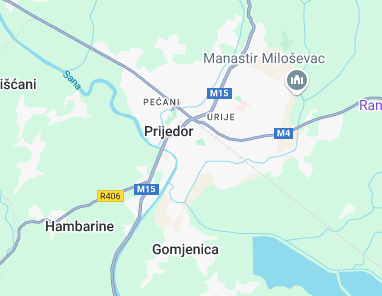

Prijedor
hemskärm
Prijedor uttal är en stad och kommun i nordvästra Bosnien-Hercegovina i den historiska regionen Bosanska Krajina, vid floden Sanas strand. Det är den näst största staden i entiteten Republiken Srpska 